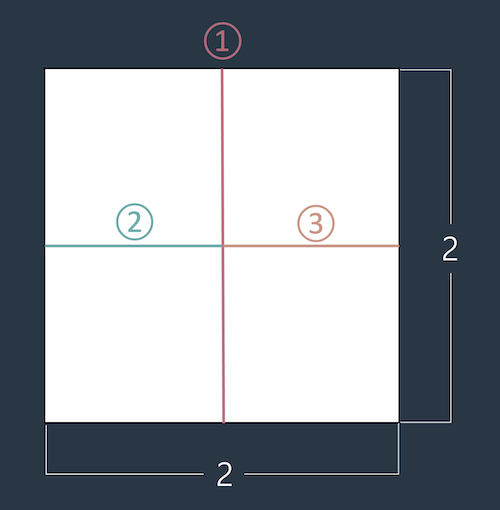

<!DOCTYPE html>
<html lang="en">
<head>
    <meta charset="UTF-8">
    <meta http-equiv="X-UA-Compatible" content="IE=edge">
    <meta name="viewport" content="width=device-width, initial-scale=1.0">
    <title>종이 자르기</title>
    <script>
        function SE(M, N) {
            var answer = ((M - 1) * N) + (N - 1);
            return answer;
        }
        function solution(N,N){
            var answer = M * N - 1;
            return answer;
        }
        console.log(SE(1,1));
    </script>
</head>
<body>
    <h1>종이 자르기</h1>
    <h2>문제 설명</h2>
    <p>머쓱이는 큰 종이를 1 x 1 크기로 자르려고 합니다. 예를 들어 2 x 2 크기의 종이를 1 x 1 크기로 자르려면 최소 가위질 세 번이 필요합니다.</p>

    

    <p>정수 M, N이 매개변수로 주어질 때, M x N 크기의 종이를 최소로 가위질 해야하는 횟수를 return 하도록 solution 함수를 완성해보세요.</p>

    <h2>제한사항</h2>
    <ul>
        <li>0 < M, N < 100</li>
        <li>종이를 겹쳐서 자를 수 없습니다.</li>
    </ul>
    
    
    <h2>입출력 예</h2>
    <table border="1">
        <tr>
            <td>M</td>
            <td>N</td>
            <td>result</td>
        </tr>
        <tr>
            <td>2</td>
            <td>2</td>
            <td>3</td>
        </tr>
        <tr>
            <td>2</td>
            <td>5</td>
            <td>9</td>
        </tr>
        <tr>
            <td>1</td>
            <td>1</td>
            <td>0</td>
        </tr>
    </table>
    
    <h2>입출력 예 설명</h2>
    <strong>입출력 예 #1</strong>
    <ul>
        <li>본문과 동일합니다.</li>
    </ul>
    <strong>입출력 예 #2</strong>
    <ul>
        <li>가로 2 세로 5인 종이는 가로로 1번 세로로 8번 총 가위질 9번이 필요합니다.</li>
    </ul>
    <strong>입출력 예 #3</strong>
    <ul>
        <li>이미 1 * 1 크기이므로 0을 return 합니다.</li>
    </ul>
</body>
</html>